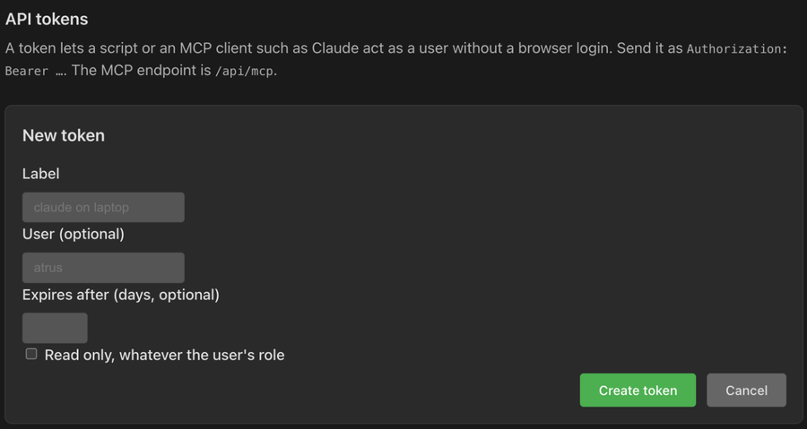

MCP for Agents
A running PSF Guard server is also a Model Context Protocol
(MCP) server at /api/mcp, on the same port as the UI. An agent
such as Claude Code can list catalogs, read grades and quality evidence,
score a night's frames, apply grades, and start imports, quality scans and
WBPP runs. The same login rules guard it.
Create an API token
On a server with user accounts, an agent signs in with a personal API token, not a password. Open Settings → Users → API tokens, click + New token, give it a Label such as claude on laptop, and choose an expiry and Read only, whatever the user's role if the agent should only read. Click Create token and copy it then: it is shown once.

The CLI does the same and prints the token once. Restart the server after a CLI change:
psf-guard users token create editor --label "claude on laptop" --expires-days 90
psf-guard users token list
psf-guard users token revoke <id>A token acts as its user and never gets more than that user has. A viewer's token reads; an editor's token can also grade and start jobs, unless it was made read only. An editor sees every token and can make one for another user. A token cannot mint or revoke tokens, so a leaked token cannot renew itself. Revoking a token stops it at once, and removing a user removes that user's tokens. See Server Accounts.
psf-guard server on your own machine, needs no token. A
network server with no accounts answers 401 here as everywhere else; see
Server Accounts.
Connect a client
Any client that speaks MCP's streamable HTTP transport works. Give it the URL and the token as a bearer header. For Claude Code:
claude mcp add --transport http psf-guard https://guard.example/api/mcp \
--header "Authorization: Bearer psfg_…"On the desktop app or a local server with no accounts, drop the header:
claude mcp add --transport http psf-guard http://127.0.0.1:3000/api/mcpThe endpoint is stateless and answers in plain JSON, so a reverse proxy needs nothing extra and there is no session to expire. Revoke the token to cut an agent off; it stops at its next call.
Tools
Every tool but list_databases takes a database:
the ID or name list_databases reports. Results are the JSON the
UI itself reads.
| Tool | Answers | Needs |
|---|---|---|
list_databases | Open catalogs: ID, name, path, image folders | read |
list_projects | Projects with targets, plans, progress and recent frames | read |
list_targets | Targets with coordinates, grade counts and last capture | read |
list_images | Lights with grade, filter, exposure and stored metrics, filtered by project, target or grade, in pages (limit, offset) | read |
get_image | One image: grade, file location, header metadata, metrics | read |
get_image_quality | Score, issues, and place in the sequence, from stored evidence | read |
analyze_sequence | Relative scores and suggested rejects for a target, a project, or the database | read |
get_statistics | Whole-database counts | read |
get_calibration_report | Calibration frames the library matches to a project's nights | read |
get_sky_coverage | Every target's footprint and exposure by filter | read |
get_jobs | Import, quality scan and WBPP progress | read |
astrobin_csv | The AstroBin acquisition CSV for a project or target | read |
grade_images | Set accepted, rejected or pending with a reason; returns the grades it replaced | write |
start_quality_backfill | Start the background quality scan | write |
start_import | Scan the configured folders for new lights and calibration frames | write |
start_wbpp_run | Run PixInsight WBPP on a project's or target's accepted lights | write and database management |
cancel_wbpp_run | Stop the running WBPP run | write and database management |
Jobs return at once; the agent polls get_jobs. A tool the
token may not use answers with a tool error that says so, not a protocol
failure, so the agent can explain it. The WBPP tools need a server started
with --allow-database-management, as the UI's
Stack in WBPP does.
The server also gives the agent PSF Guard's ground rules: sequence
analysis and quality context suggest, and nothing changes until
grade_images runs; catalog predictions and header values are not
pixel evidence, and a conclusion should say which it rests on.
Try it without a client
TOKEN=psfg_…
curl -s https://guard.example/api/mcp \
-H "Authorization: Bearer $TOKEN" \
-H "Content-Type: application/json" \
-H "Accept: application/json, text/event-stream" \
-d '{"jsonrpc":"2.0","id":1,"method":"tools/call",
"params":{"name":"list_databases","arguments":{}}}'Notes for operators
- The endpoint sits inside the API router, so the login, the read-only role and the database-management gate apply as they do to the UI.
- Tokens live in
auth.jsonbeside the registry as SHA-256 hashes. Tokens made in Settings work at once; a CLI change needs a restart. - The same token works for the REST API. See Configuration & API.